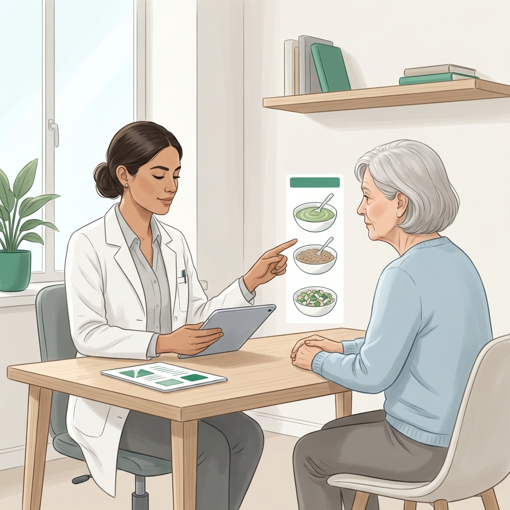
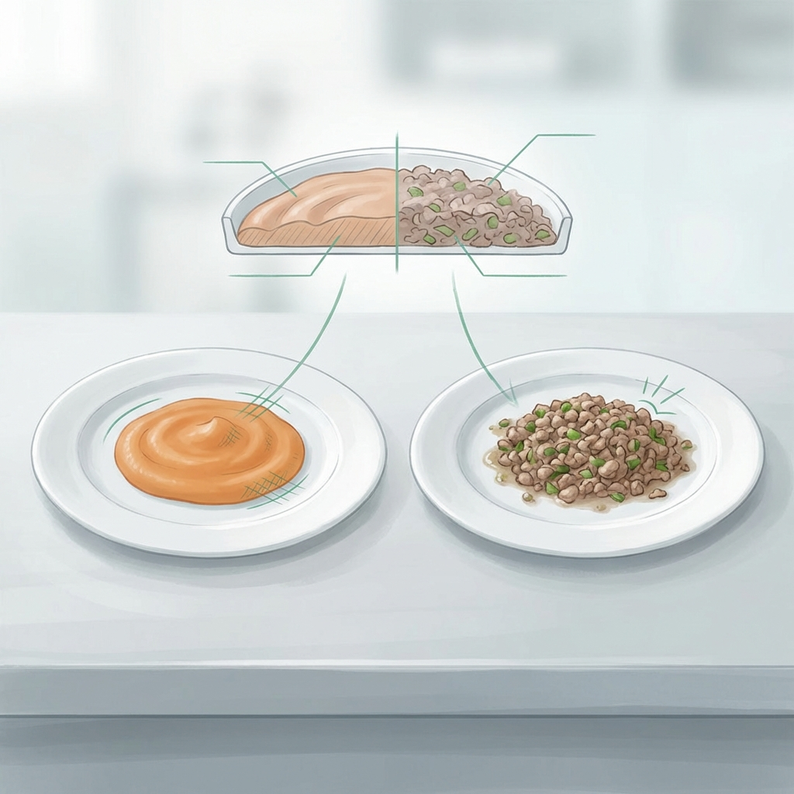
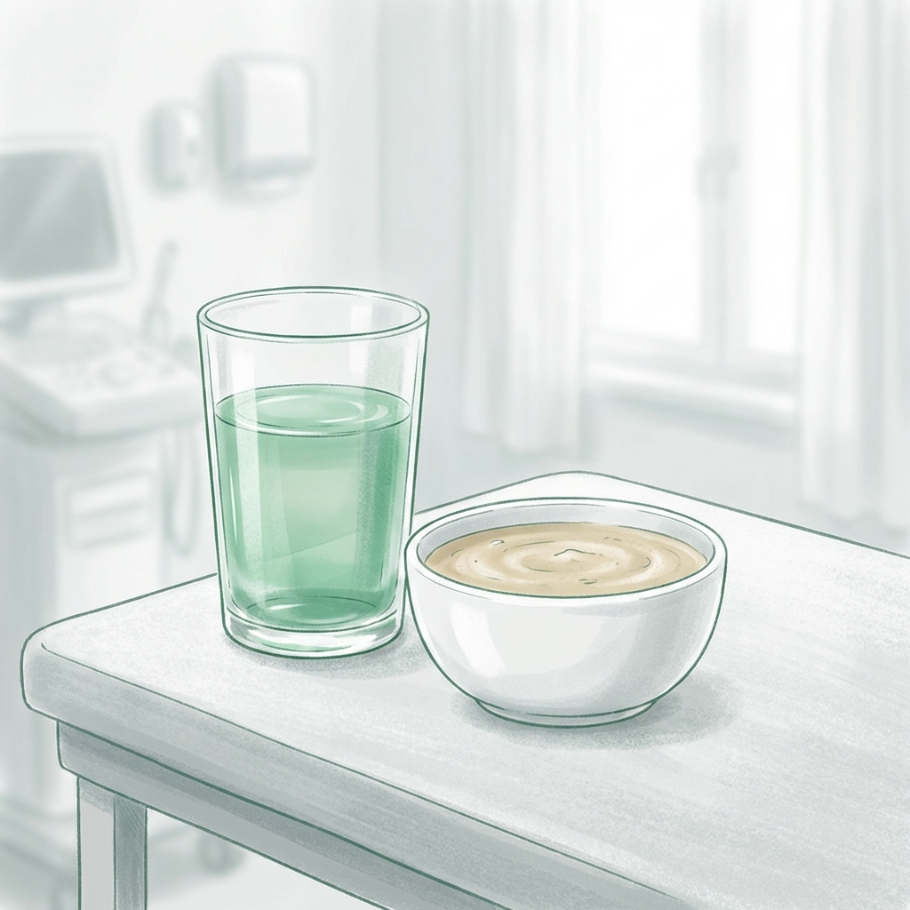

Nutrición Clínica Especializada en Disfagia
Intervención de alta precisión para personas con dificultad al tragar, priorizando la seguridad, la hidratación y el placer de comer bajo estándares internacionales IDDSI.

La disfagia no es solo una dificultad física; es un riesgo crítico de desnutrición, deshidratación y neumonía aspirativa. Encontrar la textura exacta que permita una deglución segura es vital para mantener la salud y la dignidad del paciente.
En Clínica Denki, implementamos el marco global IDDSI para definir niveles de textura milimétricos, capacitando a familias y cuidadores para que la alimentación sea segura, nutritiva y apetitosa en cada bocado.
Estándares Internacionales IDDSI
La ciencia de las texturas adaptadas para tu seguridad.

Progresión de Texturas
Modificación precisa de consistencias (Nivel 3 Licuado a Nivel 6 Suave) para asegurar el transporte oral seguro.
Seguridad en Hidratación
Uso técnico de espesantes para evitar la aspiración de líquidos y asegurar una hidratación óptima.
Compromiso con la Deglución Segura
No nos limitamos a decirte qué licuar; te enseñamos cómo asegurar la vida del paciente.

Agua Gelificada y Espesantes: Métodos clínicos para transformar el agua en una textura segura (miel o néctar) que el paciente pueda tragar sin toser.
Recursos Educativos
Guías técnicas para el manejo diario en casa.
Preguntas de Consulta
¿La disfagia es reversible?
Depende de la causa. Post-EVC es frecuente mejorar, en demencias suele ser progresiva. En ambos casos, el manejo es vital.
¿Los purés tienen que ser insípidos?
Al contrario. Con las técnicas adecuadas de Clínica Denki, la comida licuada mantiene su sabor original delicioso.
¿Qué pasa si mi familiar tose al beber?
Es una señal de alarma de aspiración. Requiere una evaluación inmediata de deglución y posible uso de espesantes.
Garantiza una Alimentación Segura y Digna
Inicia hoy un protocolo de nutrición adaptada que proteja la vida y el bienestar de tus seres queridos.
Atención en Clínica, a Domicilio y Online